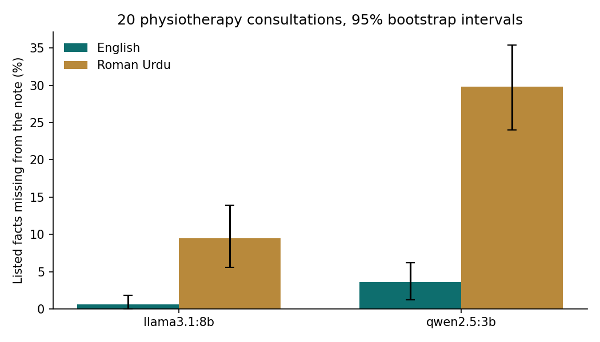

Experiment · Clinical AI · Roman Urdu
In 20 clinic consultations, local AI lost red flags and the injured side when patients spoke Roman Urdu
My two pilots used four consultations. This time I wrote twenty, added a check for left and right, and tested whether the gap is more than chance.
By Muzammal Hussain · 30 October 2026 · 5 min read
In two earlier pilots, small local models wrote physiotherapy notes from Roman Urdu consultations and got the body part wrong (first pilot, translate-first test). Four consultations are too few to separate a real gap from luck, so I wrote sixteen more, each in English and Roman Urdu with the same facts, and ran both models again.
Key findings
- The same facts were lost far more often in Roman Urdu. llama3.1:8b lost 16 of 168 listed facts from Roman Urdu against 1 from English (exact McNemar p = 0.0003). qwen2.5:3b lost 50 against 6.
- Critical facts were lost only in Roman Urdu: 8 for llama3.1:8b and 26 for qwen2.5:3b, against none in English for either model.
- The injured side was almost never written. In the 14 cases with a side, it was missing from 13 llama3.1:8b and all 14 qwen2.5:3b Roman Urdu notes, and llama3.1:8b turned left into right twice.
- A simple safety gate sent 17 of 20 llama3.1:8b Roman Urdu notes for review, against none of its English notes.
What I did
The 20 consultations are fictional and written by me: back, neck, shoulder, knee, hip and pelvis, ankle and foot, wrist and hand, and elbow problems. Some carry red flags on purpose: saddle numbness with urine problems (cauda equina), a swollen calf after a knee replacement (possible DVT), weight loss with past cancer, and a possible scaphoid fracture in a patient on warfarin. Clinical words that clinicians in Pakistan say in English, such as ligament or ACL, stay in English inside the Roman Urdu. No real patient data was used.
Both models ran locally through Ollama on a MacBook M4 (16 GB) at temperature 0, with the same note prompt as the pilots. A script checked 168 listed facts (68 marked critical), whether the note named the right body region, whether it named a region never mentioned, and whether it gave the injured side. A note that failed any check, or lost a critical fact, was flagged for a physiotherapist to read.
Results

| Model | Language | Facts missing (of 168) | Critical missing | Side missing (of 14) | Flagged (of 20) |
|---|---|---|---|---|---|
| qwen2.5:3b | English | 6 | 0 | 0 | 3 |
| qwen2.5:3b | Roman Urdu | 50 | 26 | 14 | 20 |
| llama3.1:8b | English | 1 | 0 | 0 | 0 |
| llama3.1:8b | Roman Urdu | 16 | 8 | 13 | 17 |
The paired test compares the same fact in both languages. For llama3.1:8b, 16 facts were missing only in Roman Urdu and 1 only in English; for critical facts it was 8 against 0 (p = 0.0078). For qwen2.5:3b it was 47 against 3, and 26 against 0 for critical facts (both p < 0.0001).
What the notes got wrong
| Consultation | What was said | What the note said |
|---|---|---|
| Calf swelling after knee replacement | left knee replaced 2 weeks ago, left calf swollen since yesterday | llama3.1:8b: "hip replacement surgery", pain in the hip, no calf |
| Hip arthritis | "baayan koolha" (left hip) | llama3.1:8b: "osteoarthritis of the lower back"; qwen2.5:3b: knee pain |
| Twisted knee | "daayan ghutna" (right knee) | llama3.1:8b: "a strain to the ankle" |
| Fall on the hand | left hand, possible scaphoid fracture | llama3.1:8b: "grip strength in the right hand" |
| Saddle numbness (emergency) | numbness in the saddle area, hard to pass urine | qwen2.5:3b: numbness not mentioned; added "difficulty in defecation" and "a 45-year-old male" |
| Whiplash | neck stiff and sore, nothing about the head | llama3.1:8b: "with a headache" |
The knee replacement case worries me most. After knee surgery a swollen calf is the main warning sign of a DVT, and a missed clot can travel to the lungs. The note still said DVT and sent the patient to hospital, but a physiotherapist reading it would look at the wrong joint and could not see why a clot was suspected.
Left and right went missing
From Roman Urdu, the models wrote "knee pain" or "shoulder pain" and dropped "daayan" or "baayan". A note without a side is incomplete, and one with the wrong side can lead to treatment of the wrong limb. A model cannot be trusted to keep it, so I plan to check it in code: if the consultation says daayan, baayan, left or right, the note must give the side, otherwise the model is asked once more and the note is then marked incomplete. That rule is a proposal and needs its own test.
Is a gate that flags 17 of 20 notes useful?
Every flagged note failed at least one real check, five of them only for the missing side. A gate that sends most Roman Urdu notes to a person is honest about how unreliable these models are in Roman Urdu. Correcting a draft should still be quicker than writing a note from scratch, but I have not measured that, and I have not yet read the three notes that passed, so I do not know what the gate misses.
Limitations
Twenty consultations I wrote, two models, one run at temperature 0: bigger than the pilots, but still small and written rather than spoken. The checks use keywords, so a fact in unexpected words counts as missing and a wrong fact can still count as present; the region check also flagged two fair English notes ("calf exercises" for an ankle sprain, "right leg" for a right knee). I wrote the Roman Urdu myself, and spelling varies between speakers.
What I will test next
- Sentence-by-sentence labels for the flagged notes and the notes that passed, to measure what the gate misses.
- The side rule with one retry.
- Whisper transcripts in place of clean text.
Follows: Asgari E., Montaña-Brown N., Dubois M., Khalil S., Balloch J., Au Yeung J., Pimenta D. (2025). A framework to assess clinical safety and hallucination rates of LLMs for medical text summarisation. npj Digital Medicine 8, 274. doi:10.1038/s41746-025-01670-7. Models: Qwen2.5 3B and Llama 3.1 8B run locally with Ollama.